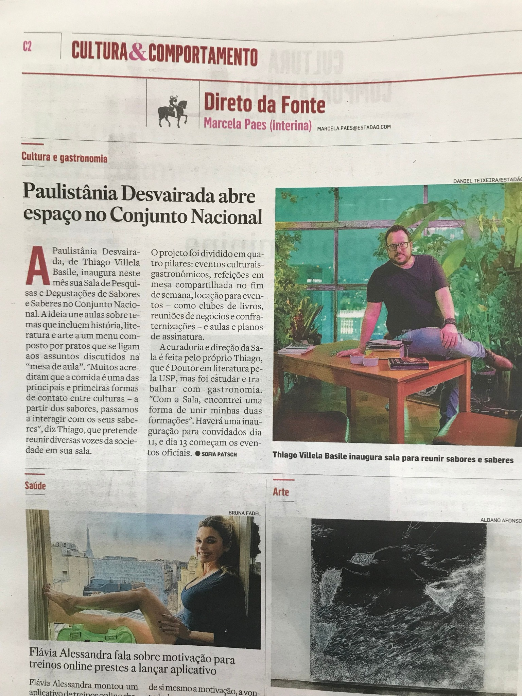
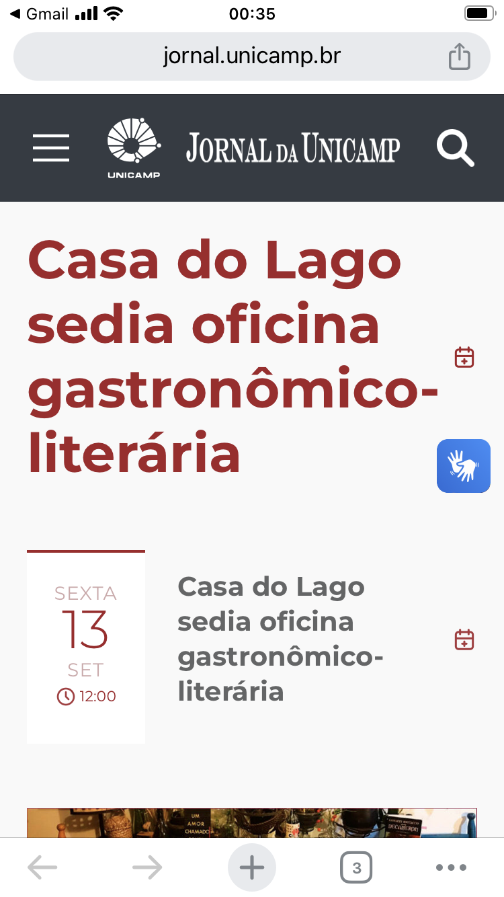
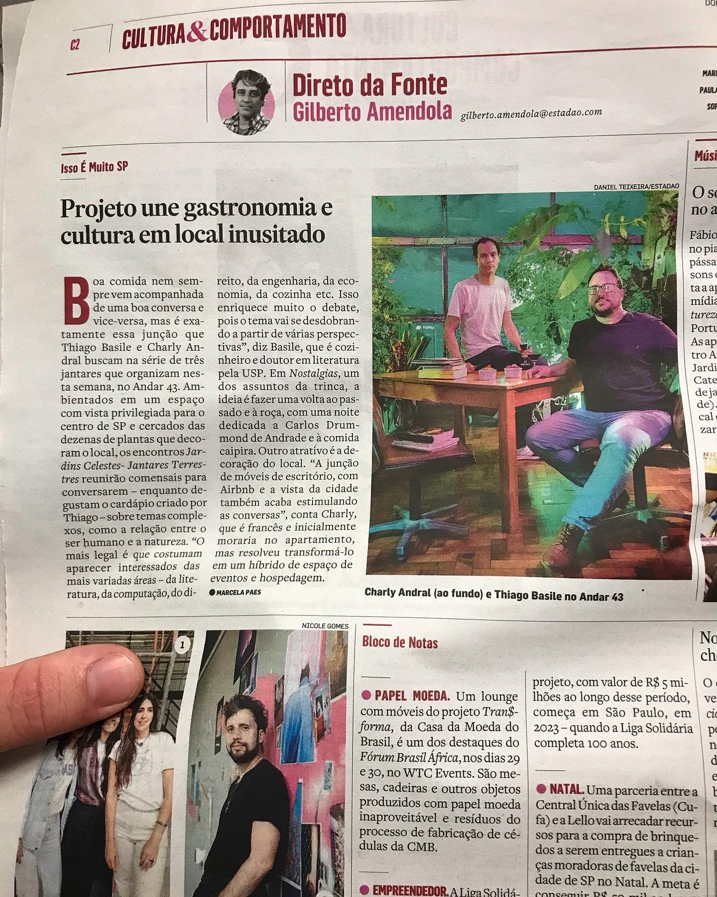
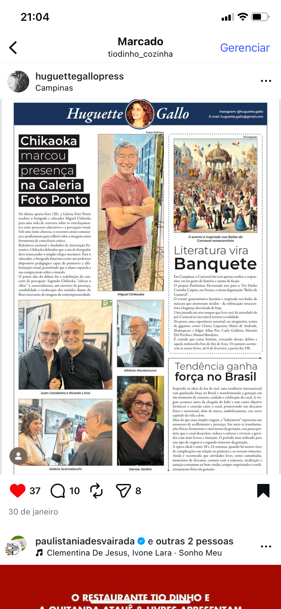
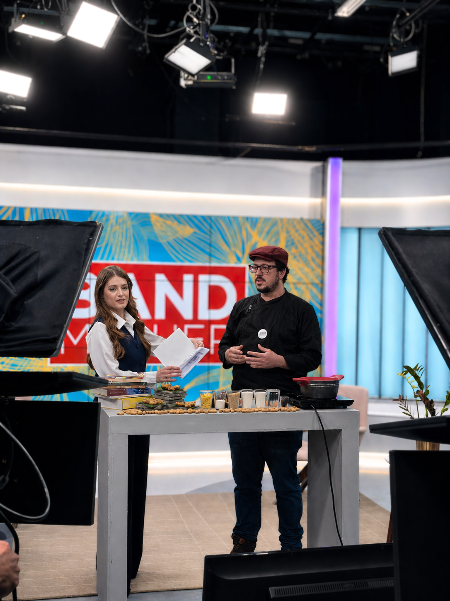
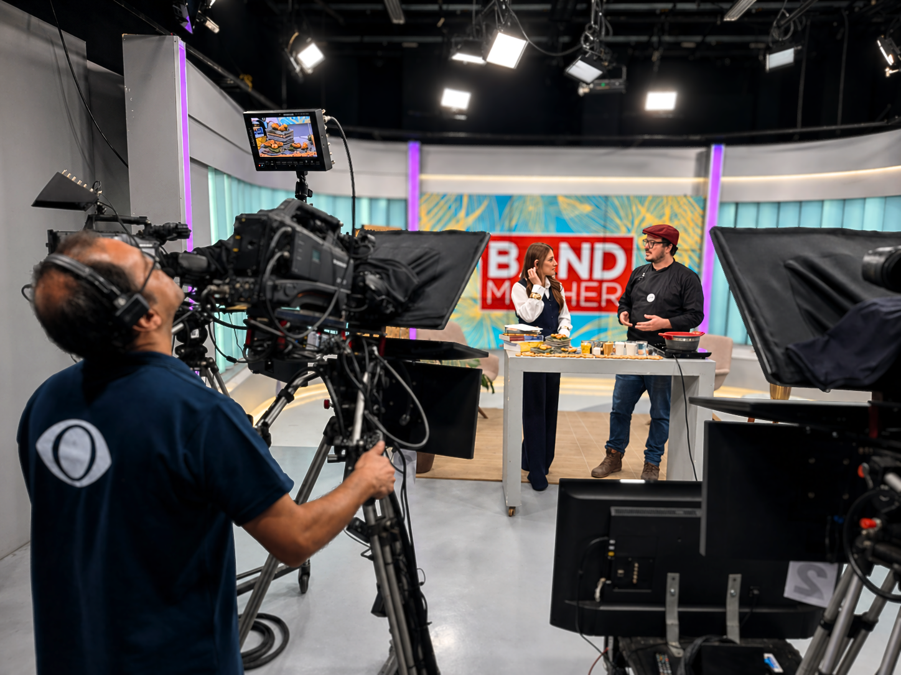

O Estado de S. Paulo · Direto da Fonte
Paulistânia Desvairada abre espaço no Conjunto Nacional
Registro da fase paulistana do projeto e da criação da Sala de Pesquisas e Degustações de Sabores e Saberes.
Matérias, entrevistas e registros que acompanham o chef Thiago Villela Basile e os projetos que atravessam sua cozinha — do Tio Dinho à Paulistânia Desvairada, entre gastronomia, literatura, teatro e pesquisa.

Registro da fase paulistana do projeto e da criação da Sala de Pesquisas e Degustações de Sabores e Saberes.

O Devorando os Grandes Clássicos na Casa do Lago, reunindo gastronomia e literatura.

Matéria sobre os encontros que aproximaram gastronomia, cultura e conversa em São Paulo.

Registro do menu degustação literário inspirado nos bailes de Carnaval.

Participação apresentando sabores e a proposta de menus degustação harmonizados com literatura.

Registro de bastidores da participação no Band Mulher.